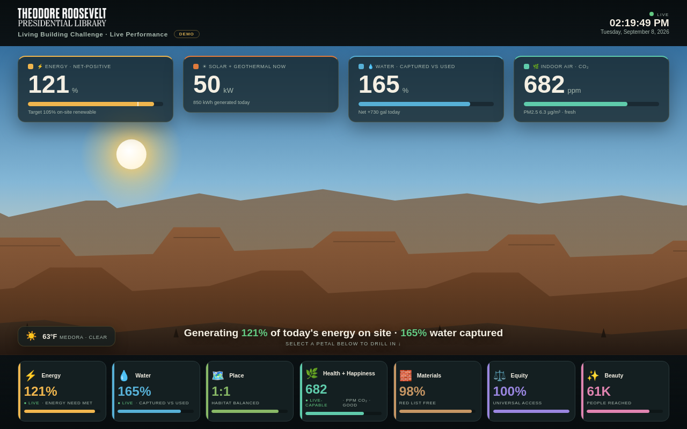

Try it right here
This loads the live project from its own domain, exactly as a visitor would see it.
What it does
A single self-contained HTML file built for a widescreen lobby screen, showing energy, water, and air-quality performance against the seven petals of Living Building Challenge 4.0. The backdrop is a vector Badlands scene with a real day-night cycle and live local weather rendered as clouds, rain, snow, fog, or lightning.
Worth knowing before you fork it: this is a working prototype driven by browser-generated demo data. The next phase wires it to the Library's building management system. What it gives you today is the whole presentation layer and one clearly marked place to swap the data source.
What it can do
- Overview screen with floating KPI tiles for energy, solar, geothermal, water, and CO₂
- Seven-petal navigation rail with per-petal drill-in pages
- Animated landscape: sun and moon arc, sky phases, stars, weather effects
- Live local conditions with no API key required
- A single adapter block designed as the one place to swap demo data for live data
- Companion spreadsheet for the petals that are documented by hand
Make it your own
Start by forking the repository into your own organization. Everything below assumes you are working in your fork, not this one.
- Fork, replace
CNAMEwith your hostname, set Settings → Pages → Source to GitHub Actions, and add the DNS record. - Edit
index.html— swap the palette, the headline copy, and the petal narrative text for your own building's story. - Change the latitude and longitude in the weather call so the scene reflects your site, or remove the scene entirely.
- Confirm your building management system actually meters what you want on screen. Anything unmetered belongs in the spreadsheet, not on the wall.
- Replace
tickDemo()inside the data-source block with afetchLive()returning the same field names. - Never put an API token in
index.html— it is public. Route through a proxy or a scheduled job that commits a static JSON file.
Stuck on a step? Open an issue on the repository. Questions from people adapting these for their own institution are the most useful feedback we get.